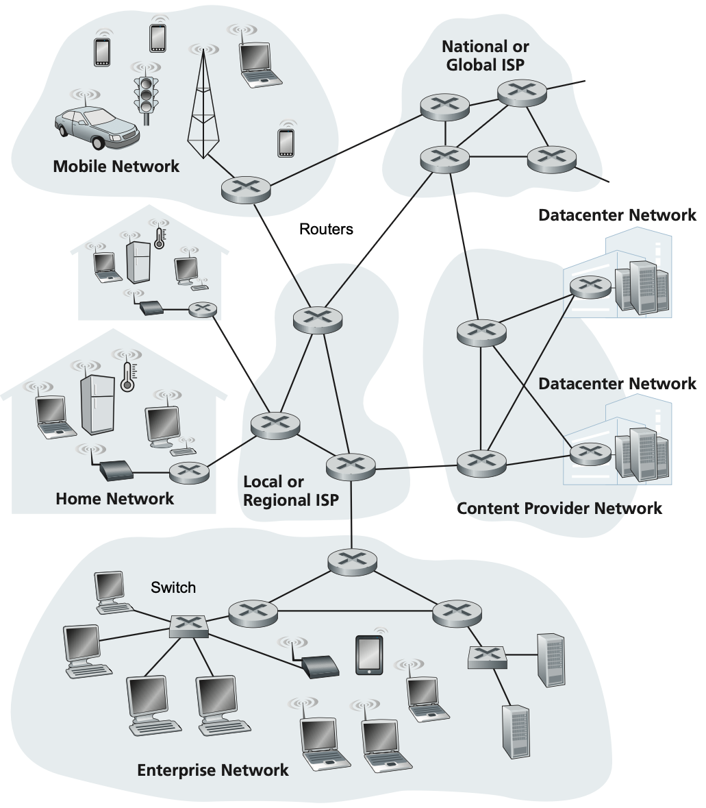
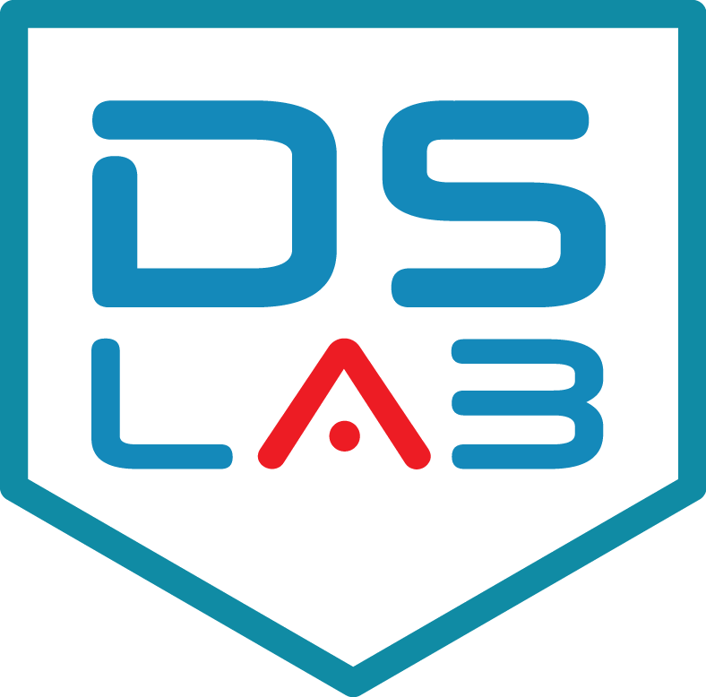

graph LR
G1["🌐 Google A"]
F1["📘 Facebook"]
G2["🌐 Google B"]
A1["🛒 Amazon"]
N1["📺 Netflix"]
U1["👤 Usuario"]
%% Conexiones normales
G1 ---|"✅"| F1
F1 ---|"✅"| G2
G1 ---|"✅"| A1
A1 ---|"✅"| N1
N1 ---|"✅"| G2
U1 ---|"✅"| G1
%% Conexiones rotas
G2 -.-|"❌ ROTO"| U1
A1 -.-|"❌ ROTO"| F1
%% Rutas alternativas
U1 ---|"🔄 Alt"| F1
F1 ---|"🔄 Alt"| N1
N1 ---|"🔄 Alt"| G2
classDef server fill:#4ecdc4,stroke:#00b894,stroke-width:2px,color:#fff
classDef user fill:#fd79a8,stroke:#e84393,stroke-width:2px,color:#fff
class G1,F1,G2,A1,N1 server
class U1 user
Introducción a las Redes de Ordenadores
Juegos en Red - Grado en Desarrollo de Videojuegos
2025-09-09

¿Qué es Internet?
Etimología: “Interconnected Networks”
- Red global de redes interconectadas
- Sistema descentralizado
- Múltiples capas jerárquicas
Características principales:
- Arquitectura distribuida
- Resiliencia a fallos
- Escalabilidad natural
- Sin control centralizado
Jerarquía de Redes
graph LR
PAN["📱 PAN (Personal Area Network)<br>Smartphone ↔ Smartwatch"]
LAN["🏠 LAN (Local Area Network)<br>Home/Office/Building Network"]
WLAN["📡 WLAN (Wireless LAN)<br>Wi-Fi Implementation of LAN"]
CAN["🏫 CAN (Campus Area Network)<br>Multiple LANs in Campus"]
MAN_ISP["🏙️ MAN (Metropolitan Area Network)<br>ISP Network"]
MAN_MOBILE["📶 MAN (Metropolitan Area Network)<br>5G/4G Mobile Network"]
WAN["🌍 WAN (Wide Area Network)<br>Between Cities or Countries"]
INTERNET["🌐 Internet<br>Global Interconnected WANs"]
VPN["🔐 VPN (Virtual Private Network)<br>Secure Tunnel over Internet"]
%% Traditional wired path
PAN --> LAN
WLAN -.-> LAN
LAN -->|Multiple LANs| CAN
CAN --> MAN_ISP
LAN -->|Multiple LANs| MAN_ISP
%% Mobile path
PAN --> MAN_MOBILE
%% Both MANs connect to WAN
MAN_ISP -->|Multiple MANs| WAN
MAN_MOBILE -->|Multiple MANs| WAN
WAN -->|Multiple WANs| INTERNET
VPN --> INTERNET
style WLAN fill:#e1f5fe
style VPN fill:#f3e5f5
style MAN_MOBILE fill:#fff3e0
- PAN: Red personal entre dispositivos cercanos.
- LAN: Red local de casa/oficina/edificio.
- WLAN: LAN inalámbrica (Wi-Fi).
- CAN: Red de campus - conecta múltiples LANs.
- MAN: Red metropolitana - cubre una ciudad, incluye redes de ISP y móviles (4G/5G)
- WAN: Red de área amplia - conecta ciudades o países.
- Internet: Red global - interconexión de todas las WANs del mundo
Ejemplo: Mensaje Madrid → Tokio
Smartphone María (WiFI) en Madrid -> Takeshi LAN en la Universidad de Tokyo
- Origen LAN Madrid: Smartphone → Router WiFi
- Router local → MAN: ISP local → MAN Madrid
- MAN → WAN nacional: MAN Madrid → WAN España
- WAN → Internet global: España → Backbone internacional
- Llegada a Japón: WAN Japón → MAN Tokio
- MAN → CAN: MAN Tokio → Universidad
- CAN → LAN: Campus → LAN específica
- Destino final: LAN → Dispositivo de Takeshi
Un caso un poco más real
- Probad a ejecutar en vuestras terminales
traceroute www.google.es(tracert www.google.esen Windows) - ¿Qué información estáis obteniendo?
- Comparadla con vuestros compañer@s. ¿Es la misma?
Internet simplificado

Componentes Clave
Router
- Conecta diferentes redes
- Usa direcciones IP
- Enrutamiento “hop by hop”
- Opera entre redes distantes
Switch
- Conecta dispositivos en misma red
- Usa direcciones MAC
- Entrega local inteligente
- Opera dentro de la LAN
En nuestras casas
Entonces… ¿Esto que es?
Identificadores en Red
Dirección IP
- “Dirección postal”
- Localiza en la red
- Ejemplo: 192.168.1.100
- Puede cambiar
Dirección MAC
- “DNI del dispositivo”
- Única y permanente
- Asignada por fabricante
- No cambia nunca
Protocolo ARP
- “Directorio telefónico”
- Traduce IP ↔︎ MAC
- Permite entrega final
- Opera localmente
Ejercicio
Prueba a ejecutar ifconfig en tu terminal MacOS/Linux o ipconfig en Windows. ¿Qué ves?.
Protocolos de Red
Protocolo: Serie de pasos bien definidos que especifican cómo intercambiar información entre dispositivos
Analogía del tráfico urbano
- Sin protocolos: Caos total, pérdida de información
- Con protocolos: Flujo ordenado, comunicación efectiva
Historia de Internet
Linea temporal de Internet.
timeline
title Evolución de Internet: De ARPANET a la Era Digital
section Era ARPANET (1969-1983)
1969 : Nace ARPANET
: 4 nodos iniciales (UCLA, Stanford, UC Santa Bárbara, Utah)
: Implementación de conmutación de paquetes
1973 : Primera conexión internacional
1983 : Adopción oficial de TCP/IP
: División de ARPANET (creación de MILNET)
: Nace el término "Internet"
section Nacimiento de la Web (1989-1995)
1989-1990 : Tim Berners-Lee inventa la World Wide Web
: Desarrollo de HTTP, HTML y URLs
1991 : Primer sitio web público
section Era Comercial (1995-2000)
1995 : Eliminación de restricciones comerciales
: Primeros ISPs comerciales (AOL)
: Aparecen Amazon y eBay
1998 : Fundación de Google
2000-2001 : Explosión de la burbuja punto-com
section Web 2.0 y Redes Sociales (2003-2010)
2003-2006 : Redes sociales
2007 : Lanzamiento del iPhone
section Era Moderna (2010-2025)
2010s : Computación en la nube, Internet de las cosas
2020s : Inteligencia Artificial
: Tecnología 5G
- ARPANET se creo con fines militares
- Se creo y publicó el primer sitio web (CERN)
- Burbuja punto com
- Creación de las Redes sociales.
- Inteligencia Artificial Generativa.
- De ~4 dispositivos (1969) a >100.000 millones (2025) en 50 años.
Infraestructura de Red
Sistemas Terminales (End Systems)
Hosts (End systems): Son los dispositivos que usan Internet como PCs, smartphones, IoT, servidores. Ejecutan aplicaciones de red.
Clasificación
- Clientes: Solicitan servicios
- Servidores: Proporcionan servicios
- Roles dinámicos (P2P)
---
title: Cliente - Servidor
---
graph TD
S["🖥️ Servidor<br/>Centralizado"]
C1["💻 Cliente 1"]
C2["📱 Cliente 2"]
C3["🖥️ Cliente 3"]
C1 <--> S
C2 <--> S
C3 <--> S
classDef server fill:#ff6b6b,stroke:#d63031,stroke-width:3px,color:#fff
classDef client fill:#74b9ff,stroke:#0984e3,stroke-width:2px,color:#fff
class S server
class C1,C2,C3 client
---
title: Peer to peer
---
graph LR
P1["💻 Peer 1"]
P2["📱 Peer 2"]
P3["🖥️ Peer 3"]
P4["💻 Peer 4"]
P1 <--> P2
P1 <--> P3
P2 <--> P3
P2 <--> P4
P3 <--> P4
classDef peer fill:#00b894,stroke:#00a085,stroke-width:2px,color:#fff
class P1,P2,P3,P4 peer
Redes de Acceso
Redes de acceso: Es la red en la que se conectan los host con el router de borde.
Tecnologías host → router
- WiFi 6: 200-400 Mb/s
- Ethernet: 10 Gb/s
- 4G LTE: 50/15 Mb/s
- 5G: 300/50 Mb/s
Características
- Alcance limitado
- Velocidades variables
- Medios compartidos vs dedicados
Tecnologías WAN
Router de borde: Router que conecta la red de acceso con el núcleo de la red.
Tecnologías comunes:
| Tecnología | Velocidad típica | Estado 2025 |
|---|---|---|
| DSL/VDSL | 50/15 Mb/s | En declive |
| Cable HFC | 300/30 Mb/s | Estable |
| FTTH PON | 1000/1000 Mb/s | En expansión |
| FTTH P2P | 10000/10000 Mb/s | Premium |
| Satelital | 100/20 Mb/s | Nicho |
Núcleo de la Red: ISPs
ISP (Internet Service Providers): Son los componentes del núcleo de la red y proporcionan interconexión entre diferentes redes.
graph LR
T1A["Tier 1<br/>🌍 Cogent"]
T1B["Tier 1<br/>🌍 Level 3"]
T2A["Tier 2<br/>🇪🇸 Movistar"]
T2B["Tier 2<br/>🇪🇸 Vodafone"]
T3A["Tier 3<br/>🏠 Lowi"]
T3B["Tier 3<br/>🏠 Pepephone"]
%% Tier 1 peering
T1A <-.->|"Peering Gratuito"| T1B
%% Tier 2 comprando de Tier 1
T1A -->|"Tránsito (€€€)"| T2A
T1B -->|"Tránsito (€€€)"| T2B
%% Tier 3 comprando de Tier 2
T2A -->|"Tránsito (€€)"| T3A
T2B -->|"Tránsito (€€)"| T3B
T2A <-.->|"Peering Gratuito"| T2B
%% Styling
classDef tier1 fill:#ff6b6b,stroke:#d63031,stroke-width:3px,color:#fff
classDef tier2 fill:#4ecdc4,stroke:#00b894,stroke-width:2px,color:#fff
classDef tier3 fill:#fdcb6e,stroke:#e17055,stroke-width:2px,color:#2d3436
classDef users fill:#a29bfe,stroke:#6c5ce7,stroke-width:2px,color:#fff
class T1A,T1B tier1
class T2A,T2B tier2
class T3A,T3B tier3
class U1,U2 users
Tier 1
- Cobertura global
- Peering gratuito
- AT&T, Telefónica
- 10-100 Gb/s
Tier 2
- Cobertura regional/nacional
- Pagan tránsito a Tier 1
- Peering selectivo
Tier 3
- Acceso local
- Última milla
- Usuarios finales
- Sin peering
Modelos de Referencia
Arquitecturas por Capas
- Cada capa = responsabilidad específica
- Servicios a capa superior
- Usa servicios de capa inferior
- Desarrollo independiente
graph TD
C1["🌐 Capa 1<br/>Frontend<br/><small>Javascript, HTML, CSS</small>"]
C2["⚡ Capa 2<br/>API/Backend<br/><small>Node.js, Express</small>"]
C3["💾 Capa 3<br/>Base de Datos<br/><small>MongoDB, PostgreSQL</small>"]
C1 <--> C2
C2 <--> C3
classDef frontend fill:#e3f2fd,stroke:#1976d2,stroke-width:2px
classDef backend fill:#fff3e0,stroke:#f57c00,stroke-width:2px
classDef database fill:#e8f5e8,stroke:#388e3c,stroke-width:2px
class C1 frontend
class C2 backend
class C3 database
Encapsulación
- Cada capa añade headers
- Datos superiores = payload
- No modifica contenido interno
graph TD
subgraph L1 ["⚡ Capa 1: Enlace - Header Ethernet"]
subgraph L2 ["🌐 Capa 2: Red - Header IP"]
subgraph L3 ["📦 Capa 3: Transporte - Header TCP"]
subgraph L4 ["📧 Datos Originales"]
DATA["Mensaje del usuario"]
end
end
end
end
classDef datalink fill:#f3e5f5,stroke:#7b1fa2,stroke-width:3px
classDef network fill:#e3f2fd,stroke:#1976d2,stroke-width:3px
classDef transport fill:#fff3e0,stroke:#f57c00,stroke-width:3px
classDef original fill:#e8f5e8,stroke:#388e3c,stroke-width:3px
class L1 datalink
class L2 network
class L3 transport
class L4 original
Encapsulación + Arquitectura por capas
---
title: Encapsulación
---
graph LR
APP["📧 Email"]
subgraph TCP ["TCP"]
APP2["📧 Email"]
end
subgraph IP ["IP"]
subgraph TCP2 ["TCP"]
APP3["📧 Email"]
end
end
subgraph ETH ["Ethernet"]
subgraph IP2 ["IP"]
subgraph TCP3 ["TCP"]
APP4["📧 Email"]
end
end
end
APP --> TCP
TCP --> IP
IP --> ETH
classDef app fill:#e8f5e8,stroke:#388e3c,stroke-width:2px
classDef transport fill:#fff3e0,stroke:#f57c00,stroke-width:2px
classDef network fill:#e3f2fd,stroke:#1976d2,stroke-width:2px
classDef datalink fill:#f3e5f5,stroke:#7b1fa2,stroke-width:2px
class APP,APP2,APP3,APP4,APP5,APP6,APP7,APP8 app
class TCP,TCP2,TCP3,TCP4,TCP5,TCP6 transport
class IP,IP2,IP3,IP4 network
class ETH,ETH2 datalink
---
title: Desencapsulación
---
graph LR
DAPP["📧 Email"]
subgraph DTCP ["TCP"]
DAPP2["📧 Email"]
end
subgraph DIP ["IP"]
subgraph DTCP2 ["TCP"]
DAPP3["📧 Email"]
end
end
subgraph DETH ["Ethernet"]
subgraph DIP2 ["IP"]
subgraph DTCP3 ["TCP"]
DAPP4["📧 Email"]
end
end
end
DTCP --> DAPP
DIP --> DTCP
DETH --> DIP
classDef app fill:#e8f5e8,stroke:#388e3c,stroke-width:2px
classDef transport fill:#fff3e0,stroke:#f57c00,stroke-width:2px
classDef network fill:#e3f2fd,stroke:#1976d2,stroke-width:2px
classDef datalink fill:#f3e5f5,stroke:#7b1fa2,stroke-width:2px
class DAPP,DAPP2,DAPP3,DAPP4,DAPP5,DAPP6,DAPP7,DAPP8 app
class DTCP,DTCP2,DTCP3,DTCP4,DTCP5,DTCP6 transport
class DIP,DIP2,DIP3,DIP4 network
class DETH,DETH2 datalink
Modelos OSI vs TCP/IP

- OSI: 7 capas, modelo teórico
- TCP/IP: 4 capas, usado en Internet
⚠️ Nota: TCP/IP no es un protocolo, hace referencia a una pila de protocolos. Además, no tiene porque utilizar necesariamente TCP, podría ser UDP.
Nivel de Aplicación
Es el nivel en que desarrollamos aplicaciones.
OSI (Capas 7, 6, 5)
- Aplicación: HTTP, FTP, DNS
- Presentación: Cifrado, compresión
- Sesión: Control de diálogos
TCP/IP
- Una sola capa integrada
- Protocolos: HTTP/HTTPS, SMTP, FTP, DNS
- Más práctico
Nivel de Transporte
Gestiona la comunicación extremo a extremo entre aplicaciones.
Capa 4 (ambos modelos)
TCP
- Comunicación confiable
- Control de flujo
- Entrega ordenada
- Corrección de errores
UDP
- Comunicación rápida
- Sin garantías
- Ideal para tiempo real
- Menor overhead
Nivel de Red/Internet
Se encarga de encontrar el mejor camino para enviar datos a través de múltiples redes. En otras palabras, se encarga del enrutamiento de paquetes.
Capa 3 OSI / Capa Internet TCP/IP
Protocolos:
- IP: Protocolo principal
- ICMP: Control y errores
- ARP: Resolución de direcciones
- OSPF, BGP: Protocolos de enrutamiento
Ejercicio
Prueba a ejecutar ping www.google.es en tu terminal. ¿Qué ves?.
Nivel de Acceso Físico
Controla cómo los datos se transmiten físicamente a través del medio de comunicación.
OSI (Capas 2 y 1)
- Enlace: Control de errores, MAC
- Física: Señales, voltajes
TCP/IP
- Capa de Acceso a Red
- Combina ambas funciones
- Ethernet, WiFi, etc.
Rendimiento en Redes
Métricas Principales
Latencia
- Tiempo que tarda un paquete en llegar a su destino.
- “Velocidad del vehículo”
- Medida en ms
Throughput (Tasa de Transferencia Efectiva)
- Datos enviados por cantidad de tiempo.
- “Número de carriles”
- Medido en Mb/s o Gb/s
⚠️ Nota: 1 MB/s = 8 Mb/s
Throughput vs Bandwidth
Bandwidth
- Capacidad máxima teórica
- Límite físico del canal
- Condiciones ideales
Throughput
- Transferencia real
- Limitado por el componente más lento
- Condiciones reales
Latencia vs Throughput
Comparativa del efecto de la latencia y throughput en el tiempo para enviar una cantidad de datos.
viewof settings = Inputs.form({
"Tamaño total": Inputs.range([50, 5000], {value: 200, step: 10, label: "Tamaño total"},),
"Latencia A": Inputs.range([1, 50], {value: 1, step: 0.1, label: "Latencia (A)"}),
"Throughput A": Inputs.range([1, 50], {value: 10, step: 1, label:"Throughput (A)"}),
"Latencia B": Inputs.range([1, 50], {value: 2, step: 0.1, label:"Latencia (B)"}),
"Throughput B": Inputs.range([1, 50], {value: 20, step: 1, label:"Throughput B"})
})
// Extraemos variables del formulario
totalData = settings["Tamaño total"]
latencyA = settings["Latencia A"]
throughputA = settings["Throughput A"]
latencyB = settings["Latencia B"]
throughputB = settings["Throughput B"]function progress(t, latency, throughput, total) {
if (t < latency) return 0;
return Math.min(100, ((t - latency) * throughput / total) * 100);
}
// Reloj animado
time = {
let t0 = Date.now();
while (true) {
yield (Date.now() - t0) / 100; // en decimas de segundo
await Promises.tick(50);
}
}
// Tiempo máximo
maxTime = Math.max(latencyA + totalData/throughputA, latencyB + totalData/throughputB)
// Progresos
progA = progress(time % maxTime, latencyA, throughputA, totalData)
progB = progress(time % maxTime, latencyB, throughputB, totalData)
// Gráfico con Plot
Plot.plot({
y: {domain: [0, 100], label: "% completado"},
x: {label: "Tiempo (s)"},
color: {legend: true, domain: ["A", "B"], range: ["blue", "red"]},
marks: [
Plot.line(d3.range(0, maxTime, 0.1).map(t => ({t, y: progress(t, latencyA, throughputA, totalData), series: "A"})), {x: "t", y: "y", stroke: "series"}),
Plot.line(d3.range(0, maxTime, 0.1).map(t => ({t, y: progress(t, latencyB, throughputB, totalData), series: "B"})), {x: "t", y: "y", stroke: "series"}),
Plot.dot([{t: time % maxTime, y: progA, series: "A"}], {x: "t", y: "y", fill: "series", r: 5}),
Plot.dot([{t: time % maxTime, y: progB, series: "B"}], {x: "t", y: "y", fill: "series", r: 5})
]
})Componentes de la Latencia
d_{total} = \textcolor{red}{d_{proc}} + \textcolor{blue}{d_{queue}} + \textcolor{green}{d_{prop}} + \textcolor{orange}{d_{trans}}
- dproc: Procesamiento en router (microsegundos)
- dqueue: Espera en buffer (variable con tráfico)
- dprop: Propagación por el medio (d/s)
- dtrans: Transmisión de datos (L/R)
RTT
RTT (Round trip time): Tiempo total que tarda un paquete en ir desde el origen hasta el destino y volver de vuelta (ida + vuelta).
- La latencia no tiene porque ser simétrica.
- Generalmente la descarga es más rápida que la subida.
- Por lo tanto, el RTT es un valor muy importante en aplicaciones interactivas.
Comparación: Fibra vs 5G
| Factor | Fibra Óptica | 5G |
|---|---|---|
| Propagación | 67% velocidad luz | 100% velocidad luz |
| Procesamiento | ~0.1ms/salto | ~4ms (estación radio) |
| Cola | Baja congestión | Alta congestión |
| Transmisión | Hasta 10 Gb/s | < 1 Gb/s |
Resultado: Fibra generalmente más rápida y estable
Jitter: Variabilidad de Latencia
Jitter: Variación en el tiempo de llegada de los paquetes que causa inconsistencia en la comunicación.
Ejemplo comparativo
Escenario 1 (Bajo jitter):
- Paquetes: 50, 52, 48, 51 ms
- Promedio: 50.25 ms
- Variación: 1.48 ms ✅
Escenario 2 (Alto jitter):
- Paquetes: 28, 68, 43, 62 ms
- Promedio: 50.25 ms
- Variación: 15.82 ms ❌
Impacto: Voz entrecortada, saltos en video, degradación en juegos
Requisitos para Videojuegos
RTT máximo tolerado
| Género | Tolerancia | Ejemplo |
|---|---|---|
| Fighting | 16-50ms | Street Fighter |
| FPS Competitivo | 20-50ms | Counter-Strike |
| Racing | 50-100ms | Gran Turismo |
| RTS | 100-200ms | StarCraft |
| MMORPG | Variable | World of Warcraft |
| Turn-based | 500ms+ | Civilization |
Pérdida de Paquetes
Causas principales
- Congestión: Buffers llenos en routers
- Corrupción: Interferencias electromagnéticas
- Radiación cósmica: ~1 error/256MB/día
Soluciones
- Protocolos de capas superiores (TCP)
- Retransmisión automática
- Códigos de corrección de errores
- Interpolar la información
Resumen
- Internet es un sistema distribuido y descentralizado
- Evolución desde 4 hosts (1969) a >100B dispositivos (2025)
- Infraestructura jerárquica: PAN → LAN → MAN → WAN → Internet
- Modelos de capas: OSI (teórico) vs TCP/IP (práctico)
- Rendimiento: Balance entre latencia y throughput
- Aplicaciones críticas: Videojuegos requieren <50ms para competitivo
